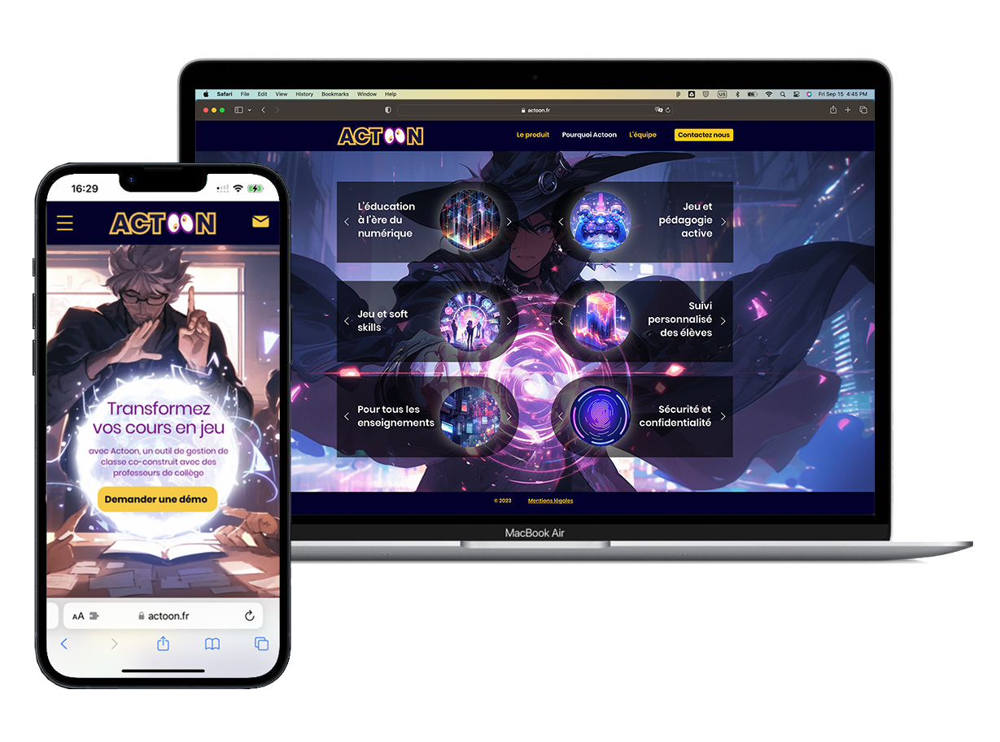
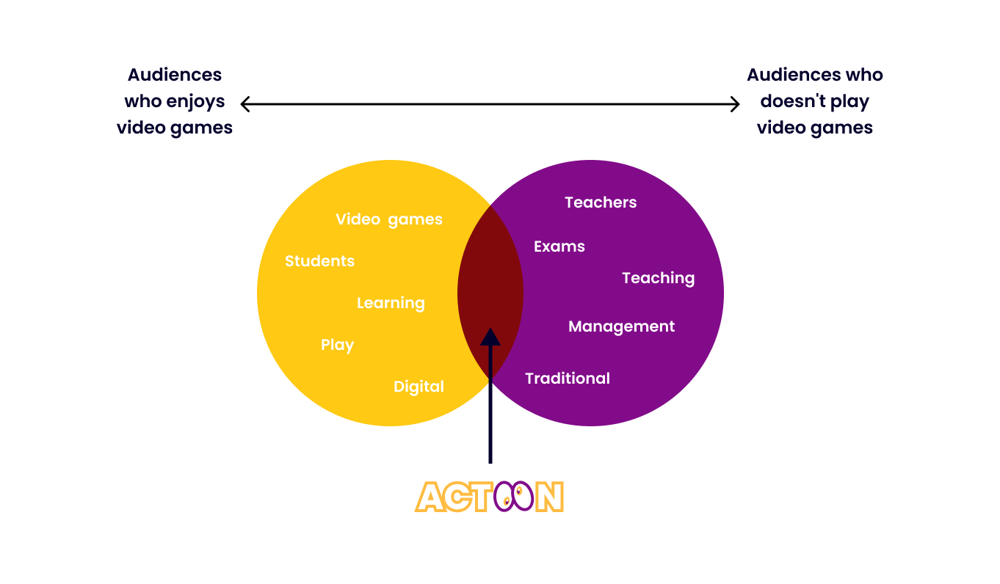
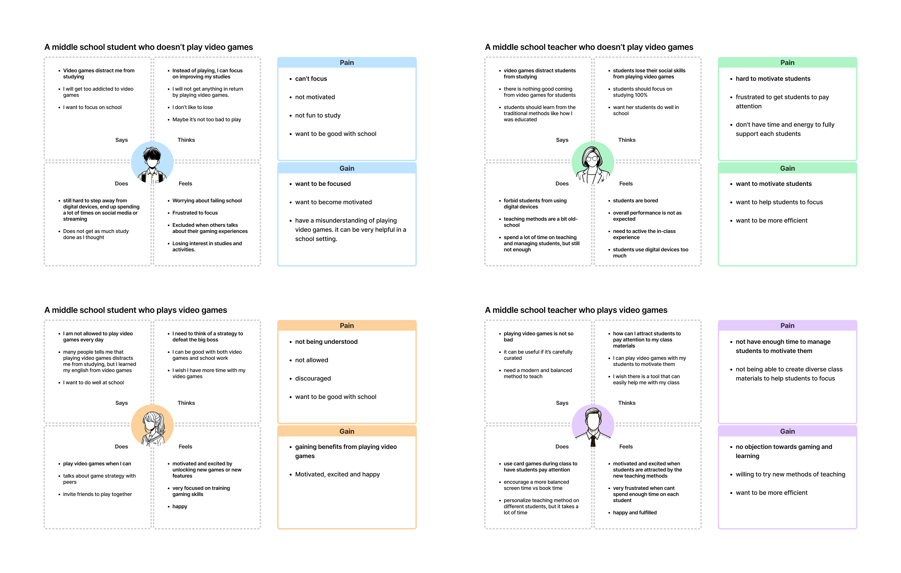
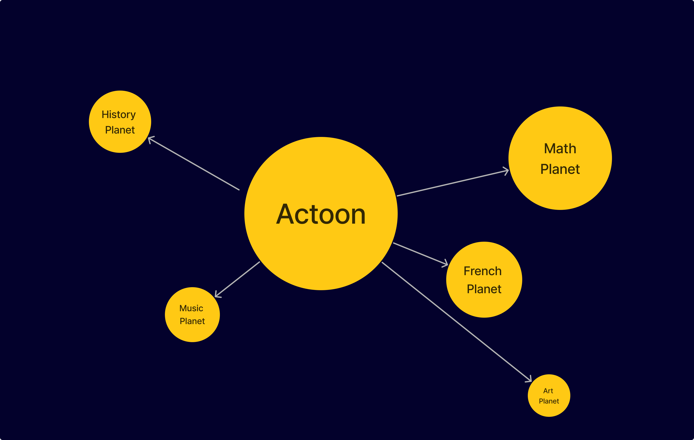
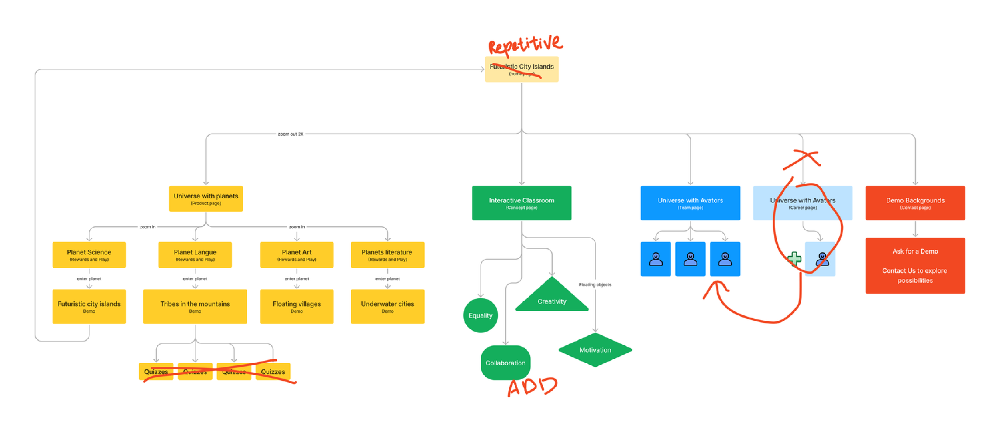
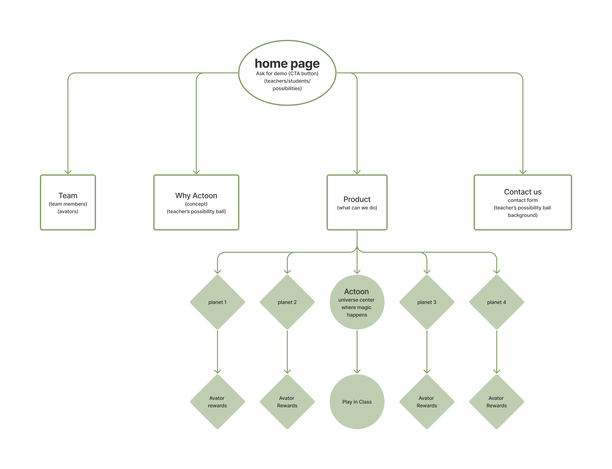

Actoon is a French software publisher that offers fun classroom management tools. The website serves as a marketing tool and branding showcase, communicating how video games can be a helpful tool for learning and teaching in school.


Based on the interviews and research, I discovered these core issues:
To gain a deeper understanding of our users, we analyzed four distinct user groups, each playing a crucial role in the educational process.
Goals: Empower students to achieve their learning objectives and foster a passion for education.
Motivations: Seek effective teaching strategies and tools that enhance student engagement and comprehension.
Challenges: Face the task of balancing individual student needs with the demands of the curriculum.
Needs: Require resources that promote efficient lesson planning, targeted instruction, and comprehensive assessment.

Our empathy map revealed the need to appeal to individuals who are not regular video game players. These users require more persuasive messaging to encourage them to try our product. Unlike other websites, we identified the importance of incorporating an engaging narrative into our website design. We aim to guide users through the concept of Actoon, explaining its functionality and ultimately motivating them to request a demo.
The narrative of the product revolves around the concept of middle school education as an uncharted universe, where each group of subjects represents a distinct planet brimming with knowledge and adventure.
Students embark on an immersive journey through these planets, engaging in interactive gameplay and captivating storylines to uncover hidden treasures and progress through their educational odyssey.
Actoon serves as the central hub of this universe, fostering a dynamic learning environment where teachers can seamlessly monitor student progress, provide personalized support, and offer timely encouragement along the way.

Our initial approach to the website's product page involved presenting our narrative in detail. However, this resulted in repetitive content and excessive exposure of product details. This diverted attention from the website's primary objective, which is to convey the overall value proposition rather than providing a step-by-step guide on how to use the product.

After reevaluating our approach, we decided to emphasize Actoon's central role in the learning universe. It's more than just an educational platform; it's a dynamic tool that empowers teachers to monitor student progress, provide personalized support, and offer timely encouragement throughout the learning journey.
It's like a teacher's crystal ball, unlocking endless possibilities and igniting a passion for learning.

Midjourney has been an invaluable tool in generating visuals for this website. While it initially seemed like a limitless source of creative possibilities, we've discovered both the benefits and challenges of using this AI-powered tool. Mastering Midjourney requires significant time and effort to produce results that align with our design vision. However, it remains a remarkably fast alternative to creating visuals from scratch.
Here are some key considerations when generating images using Midjourney:
Midjourney has undoubtedly accelerated our design process and provided us with a wealth of creative options. However, as with any AI tool, it requires careful guidance and refinement to fully realize its potential.